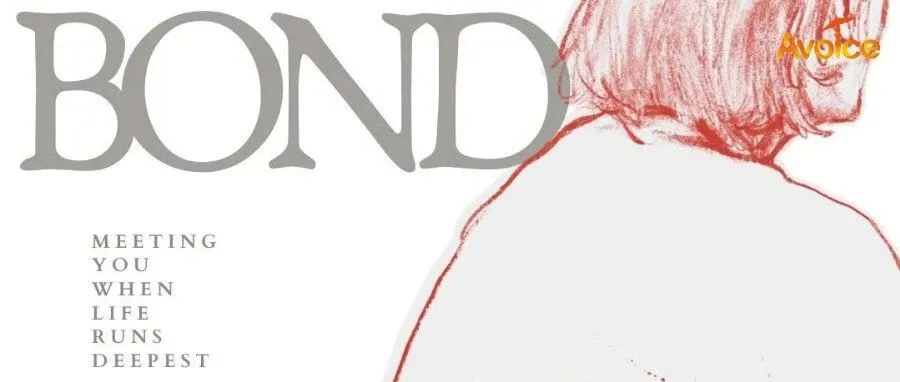
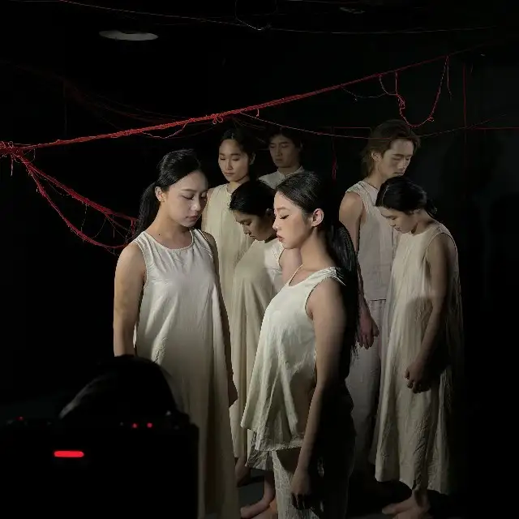
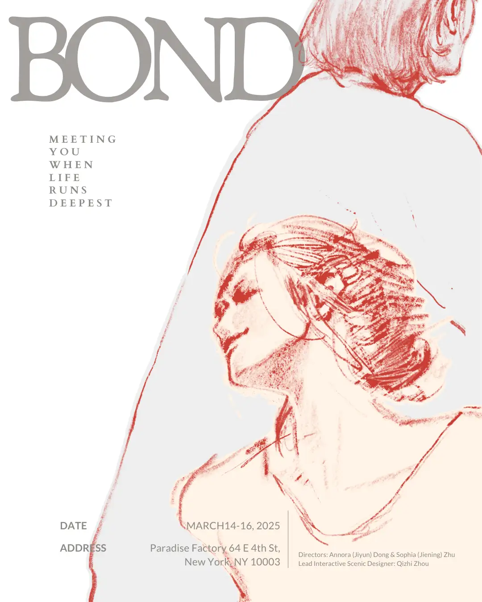
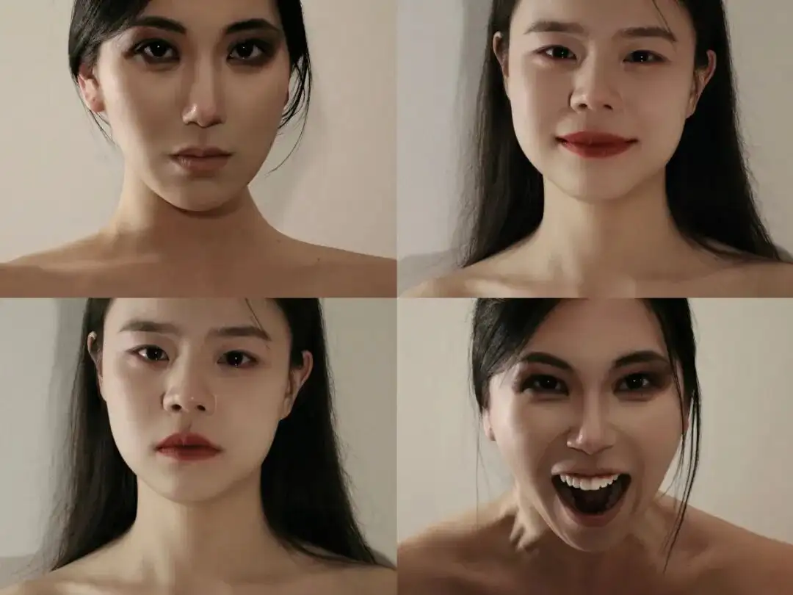
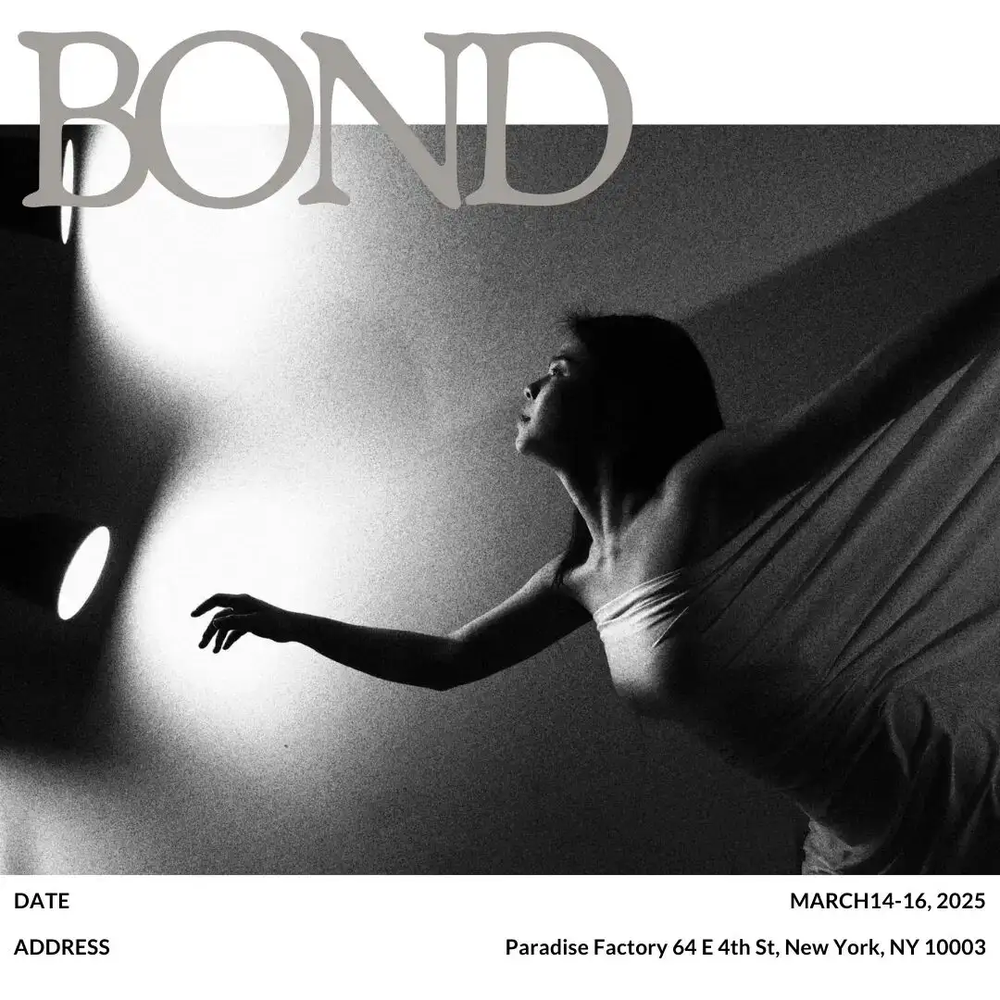
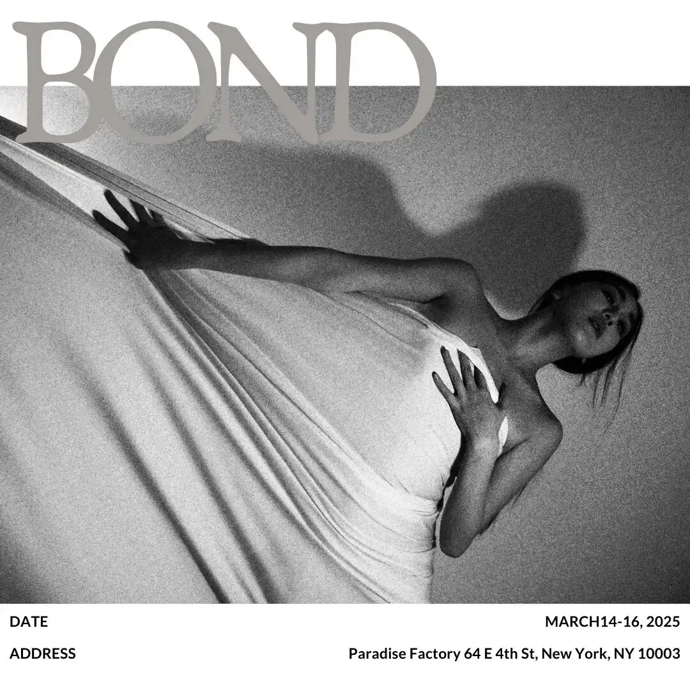
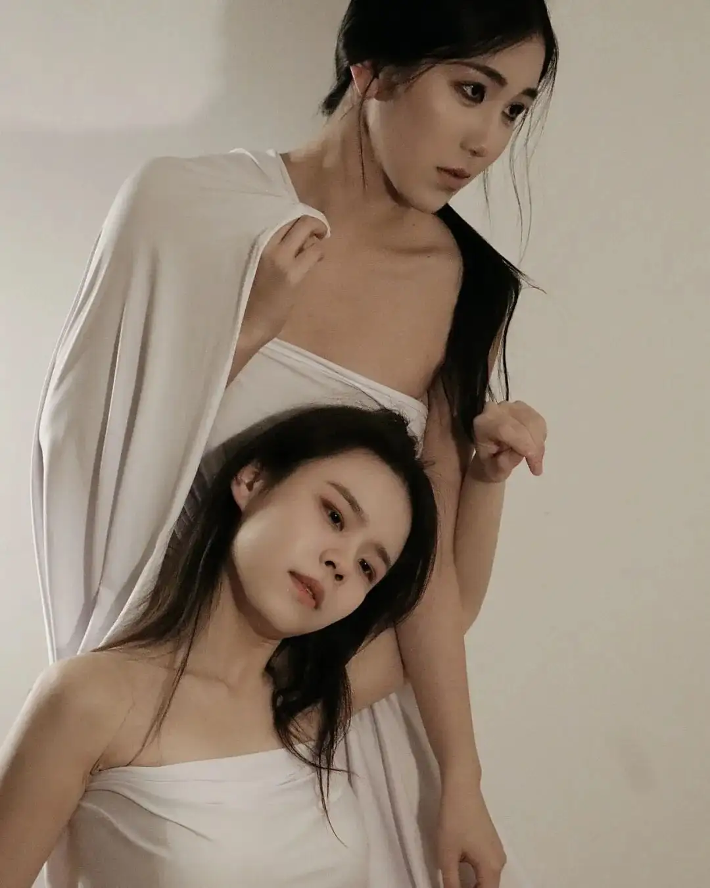
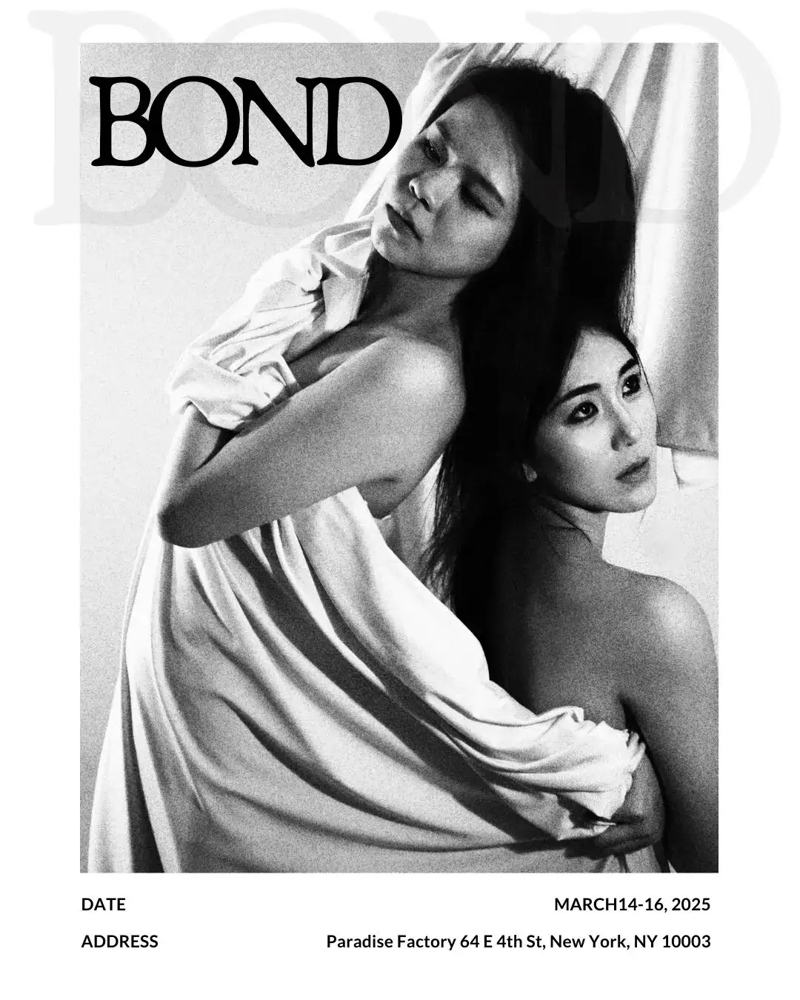
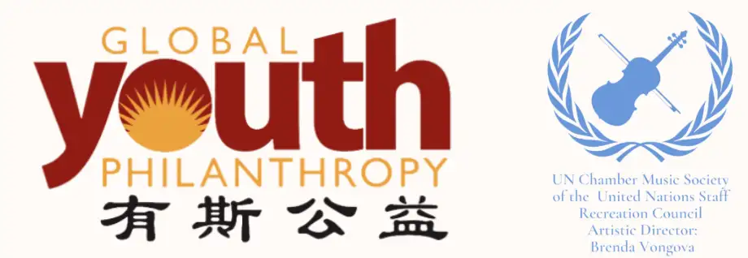
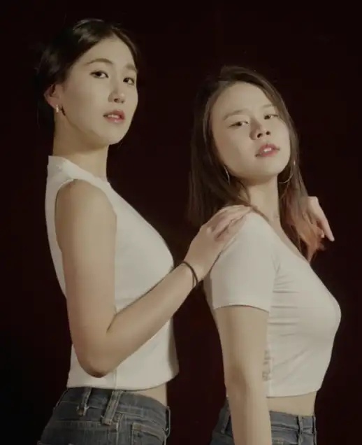

以下文章来源于SpArkling 闪光剧社

我们希望通过戏剧给community带来光亮。SpArkling是正在进行时，代表着我们的能量将带领群体持续向前流动。


联合国妇女大会边会特别呈现 · 肢体交互心理戏剧《BOND》
今日开票！

Poster Credit: Qizhi Zhou
•
🎭 时间：3月14日 - 3月16日
📍 地点：Paradise Factory – 64 E 4th St, New York, NY 10003
•
继《年夜饭》后，我们带来全新沉浸式心理戏剧《BOND》
2025年1月，SpArkling的话剧《年夜饭》在纽约下城著名的外外百老汇剧场Gene Frankel Theatre上演五场，场场爆满，为观众带来了一场视觉、听觉和味觉的三重感官盛宴。
今年3月，导演、编剧董语柔与朱婕宁再次突破边界，推出全新肢体交互心理戏剧《BOND》。剧本改编自曾执教哈佛大学与麻省理工学院的教育心理学博士、美国东岸知名私立大学社会科学与人文系教授 Dr. Ann Cai的作品《哈佛神经缘》。
这部作品将作为2025年3月纽约联合国妇女大会边会的特别呈现，在外外百老汇剧场展演。剧目深刻探讨了心理健康、社会期望与自我发现等主题，将带领观众共同探索心理困境与自我救赎之路。

Photo Credit: Zhenyu Meng
故事简介
一帘之隔，命运相系。白芸晓（April）与韩晓笛（June），两位女性在光影交错中探寻情感、创伤与自我。
白芸晓（April），温和理性的心理学助理教授，试图治愈他人以弥补过往的裂痕，然而内心却暗流涌动，终究不得不直面自己的脆弱与执念。
韩晓笛（June），敏感疏离的研究生科研助理，时而内耗时而自卷，既渴望关爱又抗拒依赖，在逃离与冲撞中，不断寻求自我存在的意义。
当两个注定相遇的灵魂碰撞，世界会掀起怎样的涟漪？


沉浸式体验
你的选择，决定你的视角！
我们将观众席分割成两半，你的选择将决定你代入谁的视角。
左侧：深入白芸晓（April）的内心世界，感受她的理性与脆弱。
右侧： 走进韩晓笛（June）的心理空间，体会她的对抗与渴望。

Photo Credit: Zhenyu Meng
灵感来自于叙事心理学，两侧观众将分别体验到不同人物的心理深度与故事脉络。通过肢体表达与交互艺术的融合，BOND将外化人物的内心冲突，带你沉浸于两个灵魂的交织与碰撞。

演出场次
3月14日 7:00 PM
3月15日 3:30 PM, 6:00 PM, 8:30 PM
3月16日 4:30 PM, 7:00 PM
🎟 开票信息
https://www.eventbrite.com/e/off-off-broadway-show-bond-tickets-1263138975679?aff=oddtdtcreator
席位有限，抢票请速！
扫描下方二维码或点击阅读原文购票
内容提示
Depiction of Substance Use
Mental Health Struggles (Personality Disorders, Depression, Anxiety, Bipolar Disorder…)
Racism
Self-harm
Sexual Content
Suicidal Ideation
(*All terms are listed in alphabetical order.)
•
你的选择，决定你所看到的未来。
准备好踏入这场心灵之旅了吗？🎭
•
Credit List
Creative & Design Team
Director/Playwright(s): Annora (Jiyun) Dong, Sophia (Jiening) Zhu
Lead Interactive Scenic Designer: Qizhi Zhou
-
Interactive Technology: Weifan Guo
Lead Music Director: Zhiqi Su
Stage & Transition Coordinator: Jianyao Tang
Stage Assistant: Chloe Ge
Lighting Designer: Jinxian (JC) Chang
Associate Lighting Designer: Samuel Ryu
Costume Designer: Katie Guo
Photographer: Connie(XiaoLu) Liu
Dramaturg: Daisy (Anqi) Cai
Translator/Editor(s): Dr. Ann Cai, Robert Davis, Cynthia Xiao
Production Team
Producer(s): Annora (Jiyun) Dong, VV (Weiyu) Tian, Sophia (Jiening) Zhu
Stage Manager: Vivienne (Yuwen) Chen
Marketing Team: Annora (Jiyun) Dong, VV (Weiyu) Tian, Qizhi Zhou, Sophia (Jiening) Zhu
Performance & Artistic Team
Artistic Director: Brenda Vongova (President of UN Chamber Music Society)
Artistic Consultant: Zhenyu Meng
Acting Consultant: Yuchen Zhou
Choreographer(s): Annora (Jiyun) Dong, Miaotian Sun, Sophia (Jiening) Zhu
Actor(s): Annora (Jiyun) Dong, Sophia (Jiening) Zhu
(*All names are listed in alphabetical orders based on surnames.)
Special Thanks
Dr. Philip Thai (Northeastern University Global Asian Studies Center)
Rebecca (Dixuan) Bai
Phoebe (Lin) Wang
Sherry (Yuanyan) Xie (Global Youth Philanthrophy)
Presented by Global Youth Philanthrophy & SpArkling Theatre Studio;
Financially supported by Northeastern University Global Asian Studies Center;
This play is adapted from the stage play script "Harvard NeuroBond" by author Lin, Tian.

SpArkling闪光戏剧工作室
SpArkling闪光戏剧工作室由两位青年女性艺术工作者董语柔（Annora Dong）与朱婕宁（Sophia Zhu）于2024年1月创立。两位创始人相识于纽约大学帝势艺术学院先锋戏剧工作室（Experimental Theatre Wing），因在艺术感知上的独特差异与深刻共鸣而携手创立了剧社。SpArkling的艺术灵感与能量源自纽约、上海等多地，致力于通过先锋实验戏剧与肢体剧场的形式，用创造力与激情点亮身边的人与世界。工作室的核心使命是通过艺术跨越文化边界，构建人与人之间的深层连接，持续在国际舞台上推动跨文化艺术交流。

朱婕宁Sophia Zhu （左）
董语柔Annora Dong（右）